Begreper og konsepter
1. Generelt
Her introduseres noen begreper og konsepter som kan være viktig for felles forståelse.
2. Kontekst for datautveksling
Eksempel:
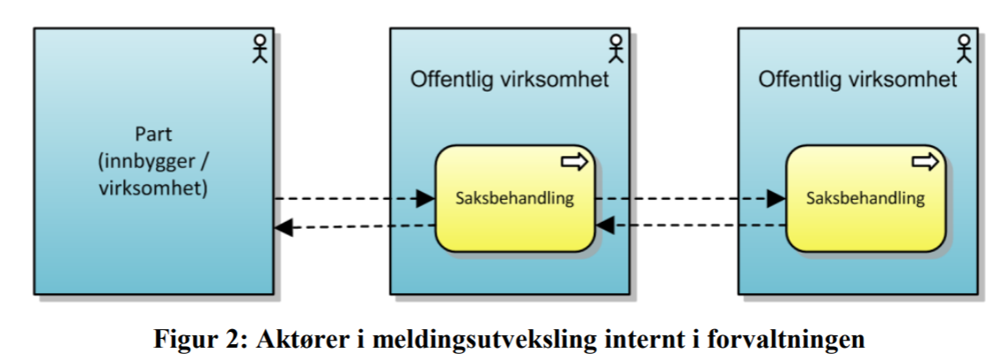
3. Arkitekturparadigmer
The term Architecture Paradigm is used here about an approach to architecture, something that is larger than an architecture pattern or a reference architecture. It relates to the term design paradigm, which is more specifically an approach to designing solution logic.
An Architecture Paradigm may include other paradigms, and relate to other paradigms. E.g. the Service-Oriented Architecture paradigm could be said to include the Microservices paradigm and to relate to the Event-Driven Architecture paradigm (or of you consider SOA 2.0, it could include Event-Driven).
Vi skiller (foreløpig) mellom følgende arkitekturparadigmer:
-
Tjenesteorientert arkitektur (SOA), inkl. Microservices (diskutabelt)
-
Ressursorientert arkitektur (RDA), inkl. REST og Linked Data/Semantic Technologies
-
Hendelsesdrevet arkitektur (EDA)
Se også (midlertidig lenke) : https://doc.difi.no/nasjonal-arkitektur/kunnskap_/#_arkitekturparadigmer
7. Begrepet data vs. informasjon
Det er i mange sammenhenger relevant å skille mellom begrepene data, informasjon og kunnskap (og visdom, eller kapabilitet – dvs. evne til å bruke kunnskapen til noe fornuftig).
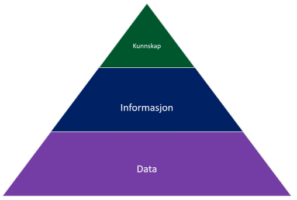
I tilknytning til datautveksling er ikke alle distinksjonene nødvendigvis relevante. Så langt det gir mening, benyttes begrepet data heller enn informasjon. Det gir f.eks. mening å si informasjonssikkerhet, mens en snakker om sikring av data for å oppnå informasjonssikkerhet. En skiller også gjerne mellom konseptuelle, logiske og fysiske data.
Figuren nedenfor introduserer noen begreper som det er viktig å ha en presis definisjon på i tilknytning til datautveksling.
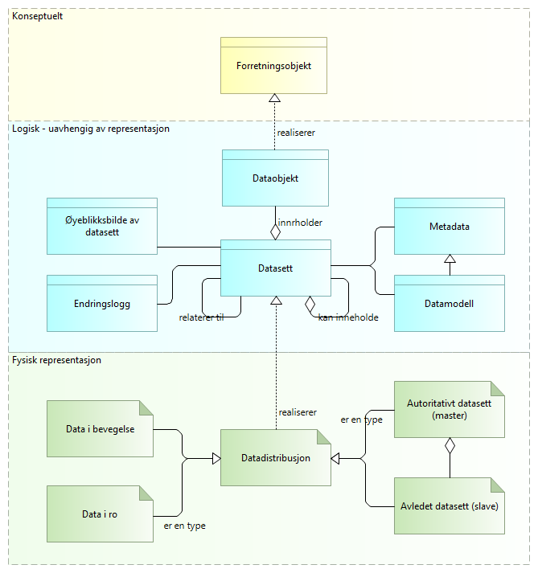
Forklaring til figuren:
Data kan samles i datasett, som beskrives i form av metadata og datamodeller.
Data og datasett er å oppfatte som "logiske" definisjoner, uten binding til representasjon, teknisk løsning eller fysiske forekomster.
Innholdet i datasett ("selve dataene") kan redegjøres for i form av tidsstemplede øyeblikksbilder eller ved endringslogger ut fra gitte øyeblikksbilder.
Begrepet datadistrubusjon tilsvarer begrepet https://www.w3.org/TR/vocab-dcat/Class:_Distribution[[.underline]#distribution] i DCAT-standarden. Dette kan f.eks. være dokumenter i et dokumentarkiv eller tabeller i en database. Det kan også være «data i bevegelse», f.eks. en melding i en datautveksling.
Det er den fysiske forekomsten av data i ulike systemer som må sikres, enten det dreier seg om data som er lagret over tid (data at rest) eller data som finnes midlertidig mellom systemer i en datautveksling (data in motion).
Det skilles videre mellom autoritative datasett (masterdata) og avledete data (slavedata)
Merk:
|
-
Det finnes ulik praksis for bruk av begrepet dokument. Dette begrepet brukes ikke i sammenheng med referansearkitekturer for datautveksling.
8. Synkron vs. asynkron kommunikasjon
Når den prosessen som gjør en spørring må vente på svar for å komme videre, kalles det en synkron spørring. Det behøver ikke å bety at svaret kommer raskt, men selve kommunikasjonsinfrastrukturen er typisk lagt opp til effektiv transport av data.
Spørringer kan også gjøres asynkront, med asynkrone meldinger, der den prosessen som spør straks kan gå videre til andre oppgaver. Det behøver ikke å bety at svar tar lang tid, men konseptet tillater det.
9. Kvalitetsegenskaper ved løsninger for datautveksling
Foreløpig liste over slike kvalitetsegenskaper (quality of service) ved løsninger for datautveksling:
| Leveringstid for meldinger | Garantert leveringstid vs. krav til leveringstid Mål: Mikrosekunder, millisekunder, sekunder, timer, dager, |
|---|---|
Responstid for spørringer |
Garantert responstid vs. krav til responstid. Mål: Mikrosekunder, millisekunder, sekunder, timer, dager, |
Leveringssikkerhet |
Grad av garantert levering (uten behov for tilbakemelding på applikasjonslaget). Mål: Prosentvis sannsynlighet for vellykket levering og mottak. |
Transaksjonssikkerhet |
|
Informasjonssikkerhet |
Konfidensialitet (å sikre at informasjon og informasjonssystemer kun er tilgjengelig for de som skal ha tilgang), integritet (sikre at informasjon og informasjonssystemer er korrekte, gyldige og fullstendige), tilgjengelighet (sikre at informasjon og informasjonssystemer er tilgjengelig innenfor de tilgjengelighetskrav som er satt). |
Kronologisk rekkefølge |
|
Prioritet |
|
Sporbarhet |
|
Etterlevelse |
|
«Store» meldinger |
|
Synkron vs. asynkron respons |
|
Innebygget unntakshåndtering |
10. Utvekslingsmønstre
10.1. Grunnleggende integrasjonsformer
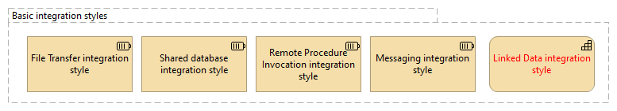
| Integrasjonsform | Forklaring |
|---|---|
File Transfer integration style |
Have each application produce files of shared data for others to consume, and consume files that others have produced. |
Shared database integration style |
Have the applications store the data they wish to share in a common database. Legg merke til at denne er med!! |
Remote Procedure Invocation integration style |
Have each application expose some of its procedures so that they can be invoked remotely, and have applications invoke those to run behavior and exchange data. |
Messaging integration style |
Have each application connect to a common messaging system, and exchange data and invoke behavior using messages. |
Linked Data integration style |
Samtidig spørring mot flere ukjente, innebygget interoprabilitet |
10.3. Generelt
Det er her inntil videre tatt utgangspunkt i en oversikt over utvekslingsmønstre som gis i en australsk rapport om Message Protocols for Enabling Digital Services, datert juli 2015, fordi denne oversikten dekker (la oss si) 80% av vårt behov for en enkel oversikt.
Det finnes MANGE andre gode kilder til informasjon om arkitekturmønstre av ulike typer, men de fleste patterns-samlingene inneholder veldig mye forskjellig, stort og smått, gjerne med mye kontekst opp mot arkitekturparadigmer som f.eks. Microservices.
NB: Beskrivelsene som er limt inn er foreløpige – her kan vi selv legge inn bedre beskrivelser!
Legg merke til at det ikke forutsettes noe bestemt om teknisk løsning eller teknologi. F.eks. kan request-reponse gjøres gjennom asynkron melding over AS4 eller
10.4. One-way push
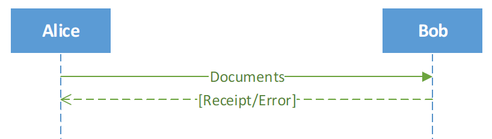
How it works:
-
Alice sends a document to Bob
-
Optionally, Bob may return a receipt or an error signal (if any)
Comments:
This is the simplest messaging pattern. The sender can send a document to a destination with a one-way call. This pattern can be implemented in asynchronous fashion so that the sender does not have to wait for anything.
If this exchange is implemented using a pulling mechanism where the receiver (Bob) actively retrieves the message from the sender (Alice), it is a lightweight messaging solution very suitable for small and medium enterprises that have limited IT capability and resources.
10.5. Request-Response
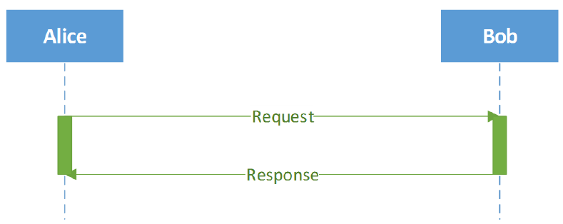
How it works:
-
Alice sends a request to Bob.
-
Bob sends back a response to Alice, which contains either data requested by Alice, or an error message.
Comments:
This is the most common messaging pattern, also called request-reply. It has good support from a large amount of middleware. It is the equivalent of a one way pull and two way message exchange pattern (MEP) in terms of functionality and capability.
It can be implemented either synchronously or asynchronously. When implemented asynchronously, if the time between the request and response is significant, a separate signal message can be used to confirm the receipt of the request message.
10.6. Multi-cast (notifikasjon til kjente mottakere)
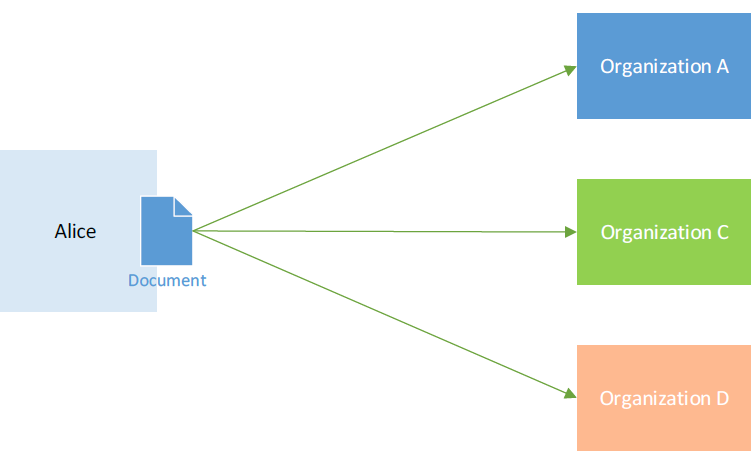
How it works:
-
Alice sends a document to multiple endpoints altogether, e.g. Organisations A, C and D as shown in the above figure.
-
Alice knows who should receive her document.
Comments :
This pattern is useful for an organisation that often needs to distribute the same information to a large number of business partners at once. An example is a request for proposal in a tender procedure. Through this pattern, the organisation can send documents within a particular group of organisations with little extra effort and resources. This pattern gets more complicated if the overall outcome depends on the results of the individual exchanges.
10.7. Multi-hop (4-hjørners med gateway-funksjonalitet )
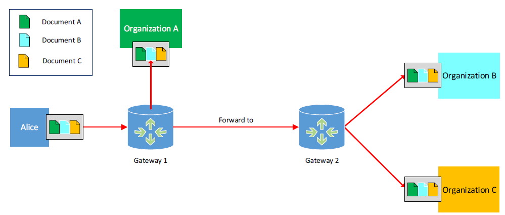
How it works:
-
Alice sends a message consisting of a set of documents to Gateway 1.
-
Based on information in the message, Gateway 1 can forward the message to the other organisations, say Organisation A and Gateway 2, for further distribution to this organisation and other agencies.
Comments:
This pattern can simplify implementation and execution of relatively complex business processes that need to involve multiple organisations, and/or comply with government regulations by automatically forwarding and notifying something to relevant organisations or government agencies.
Notes:
It should be noted that the multi-hop pattern defined here is quite different from the multi-hop model used in the ebMS and SOAP specifications, where the intermediary nodes are simply routers that forward the message to a single next node. Therefore, the pattern as defined here is sometimes also called a four corner model because the gateways play an active role in the message exchange.
Implementing the above exchange in the ebMS/SOAP model would require Alice to send three separate messages which would then be forwarded to their destinations by the gateways.
10.8. Pub/Sub (event streaming, notifikasjon til vilkårlige mottakere)
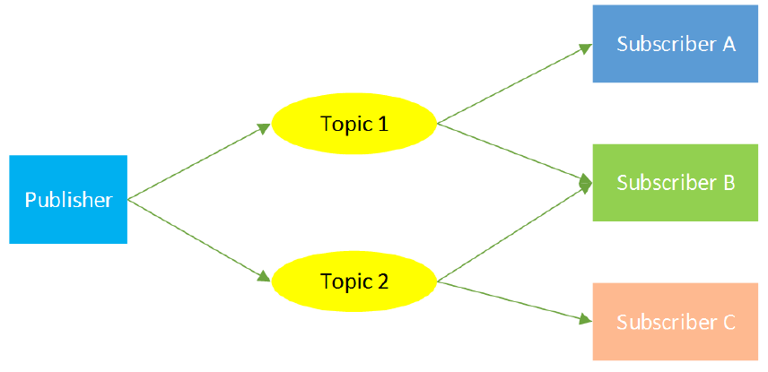
How it works:
-
The publisher sends documents to a topic that is relevant to the documents.
-
Subscribers who have subscribed to the topic will automatically receive the documents sent to the topic.
-
Usually, the publisher does not know who will receive its documents because subscription is dynamic in nature.
-
Alice Gateway 1 Gateway 2 Organisation C Forward Organisation A Organisation B
Comments:
This pattern is useful for an organisation to publish company information (e.g., company news, events, new product release, etc.) to its existing and potential customers/partners. It is a well-known pattern in the enterprise integration community and well-supported by industry middleware for internal integration, instead of cross-organisation interoperations.
10.9. Batch processing
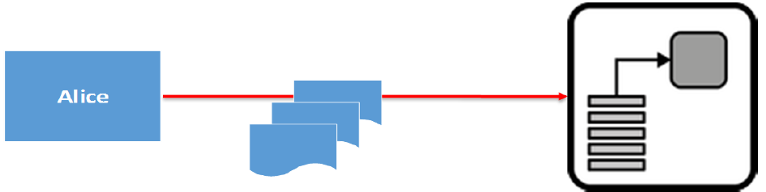
How it works:
-
Alice sends a set of documents (or a very large document) to Organisation A.
-
These documents are processed according to Organisation A’s schedule, e.g., at a particular time or when Organisation A’s environmental conditions make the processing feasible.
Comments:
This is a classic pattern, which has been widely used in industry for a long time. It is suitable for application scenarios where the endpoints cannot process the request in real time, due to having too many jobs or jobs being too big. The jobs may require many computing resources (CPU, memory) and thus may slow down the whole system. Note that rather than sending a large amount of documents to Organisation A directly, Alice can store the documents somewhere and send its reference instead. Then Organisation A can retrieve the documents when required. The problem described here can also be solved using asynchronous exchange of messages and/or custom delivery policies.
10.10. Priority Queuing
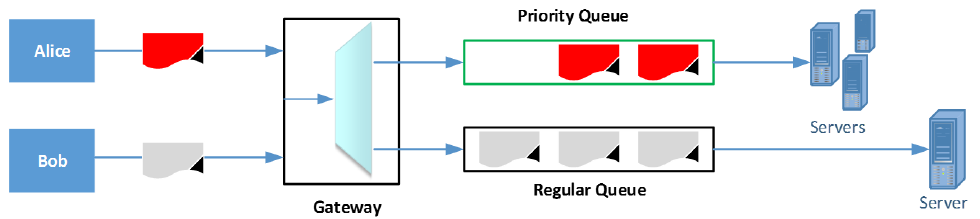
How it works:
-
Alice and Bob send messages to a gateway that supports priority queuing.
-
Since Alice’s messages are marked as “high priority”, they are routed to the priority queue. At the same time, Bob’s and other senders’ normal messages are routed to the regular queue.
-
Usually, the documents in the priority queue will be processed with more resources (e.g., high-end servers and/or faster networks), and/or scheduled to be processed in advance
Comments:
This pattern is also a QoS, which offers fast-track and/or more secure services with some extra cost. It is suitable for sensitive and/or urgent documents to be delivered faster and more securely.
10.12. Parallell spørring mot flere kilder
Foreløpige notater:
-
Støttes av SPARQL/RDF; ref. STIRdat-prosjektet (Digdir/EU)
-
Kan realiseres gjennom «publisering»
10.13. Publish/asynchronous response
A service publishes a request to one or recipients, some of whom send back a reply
11. Mer om meldingsutveksling
11.1. Abstrakt, lagdelt modell
To better understand the role of messaging protocols/profiles, we propose an abstract model of business interoperability based on the OSI (Open Systems Interconnection) model [16], as shown in Figure 2.
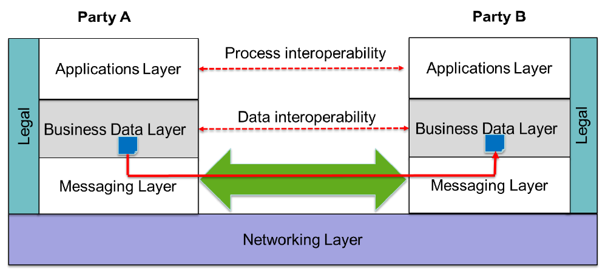
As can be seen in the above model, the interoperations between two organisations can be abstracted into four levels, as described in Table 2.
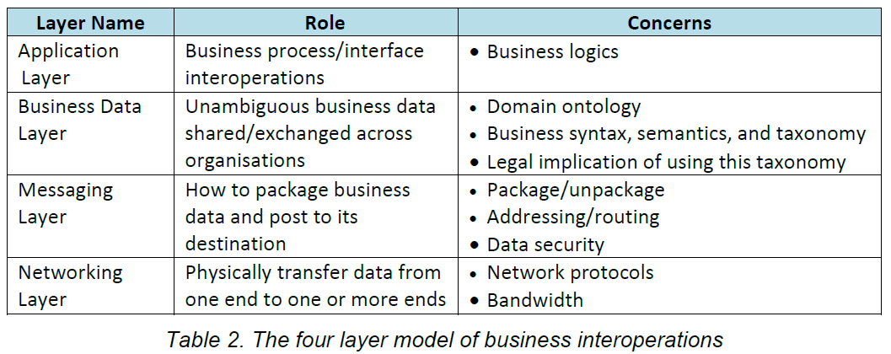
There is a cross-cutting layer we labelled “Legal” across the messaging, business data and application layers. When multiple organisations involving intermediaries/gateways share data or conduct business transactions, there are always legal contracts or regulatory compliance requirements to be negotiated and implemented. This should be taken into account when designing each layer.
For example, when an important transaction occurs between organisation A and B, the two business partners should be well aware of the consequences of this particular transaction and the corresponding compliance obligations that they should conduct, e.g., need to immediately notify ASIC (Australian Securities & Investments Commission) to comply with related regulations.
At the business data layer, the legal implication may refer to a specific well-defined ontology and/or taxonomy agreed to be used for cross-organisation documentation exchange, whose syntax and semantics may bind to legal liability and obligations.
The legal implication at the messaging layer likely focuses on data security and legal responsibilities related to messaging QoS. For example, different contents in a document require different levels of data protection. As a result, a regulation or a contract may require a particular configuration to enforce a particular set of security protections for a specific class of data contents.
The traditional, often human-intensive, approaches to handling contracts and compliance may not scale well if an organisation needs to collaborate with a large number of counter-parties, even in an on-demand basis. Latest technologies in smart contracts and automated regulation compliance using business process analysis can be integrated to scale up the contract/compliance aspects of B2B collaborations.
Note that while Figure 2 uses a direct line to represent messaging between two parties, one or more intermediary gateways can exist between Party A and Party B. A dedicated messaging layer can decouple applications across organisations and provide a variety of qualities for messaging services to meet different business requirements without having impact on the application layer.
Next, we look more closely at the messaging layer to examine the basic functionalities of the layer and the additional qualities of service (QoS) functions it can offer. Although we are focusing on the messaging layer, the QoS functions can also be built into the application layer, as also noted in some of the interviews. The advantage of having this functionality in the messaging layer, however, is that it only needs to be implemented once and can be used by different applications, making it a more effective solution than implementing it in each application.
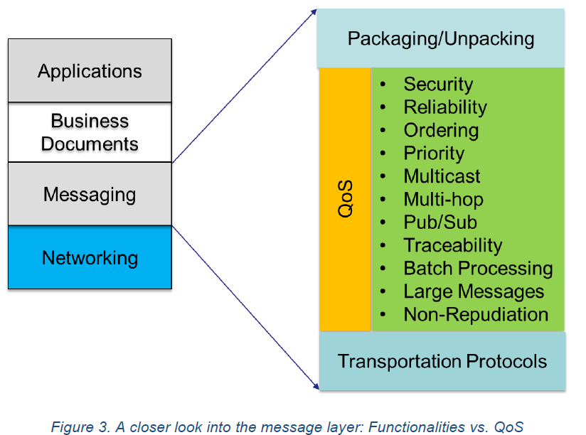
As shown in Figure 3, the messaging layer conducts cross-organisation information exchanges in the following steps:
-
Package a message using a standard pre-agreed format
-
Send the message to its destination either directly or via an intermediary gateway using one or more standard transportation protocols
-
Receive and unpack the message using the same pre-agreed format
-
Conduct the extra operations to provide a set of particular QoS required by the collaborative business applications
11.2. Teknologier og standarder for meldingsutveksling
Oversikt over gammelt og nytt:
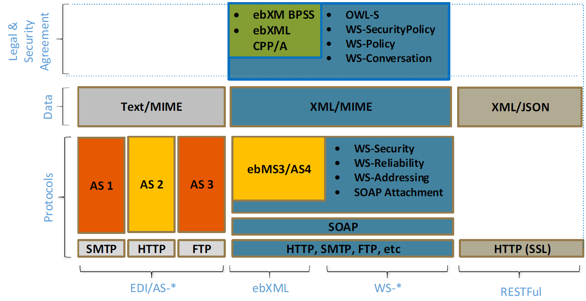
Foreløpige stikkord:
-
eDelivery benytter AS4, som er basert på ebMS3. AS4 er nylig blitt en ISO-standard (2020) , og har nå støtte for «store» meldinger.
-
eHelse benytter ebMS2
-
SOAP er i bruk flere steder, mer er ikke like pop lengre
-
REST er stadig mer pop. Mye arbeid på g i EU, blant annet med standardprofilog mye rundt API management
-
I tillegg til dette kan nevnes GraphQL
-
Og SPARQL…
-
…